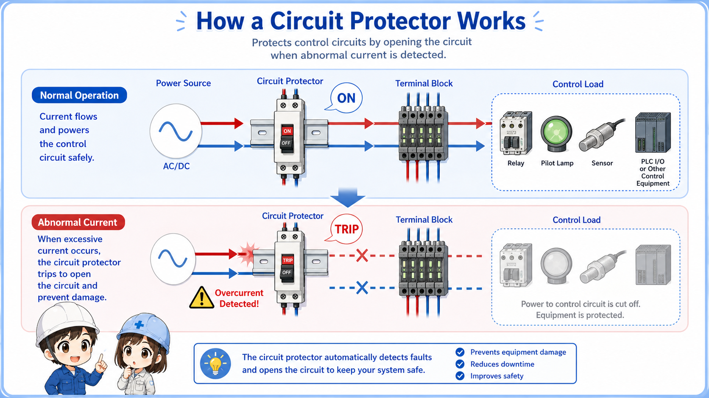
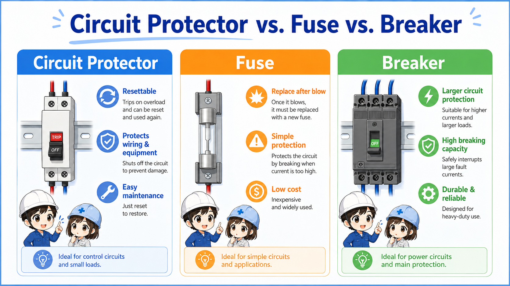
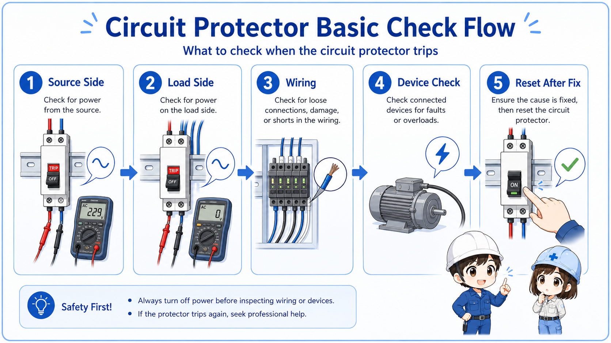

What is a circuit protector?
A circuit protector is a protective device used to help protect small electrical circuits from overcurrent or short-circuit conditions.
In control panels, a circuit protector is often used for control power branches, small device circuits, and auxiliary circuits. It is similar in purpose to a fuse or breaker, but it is commonly used as a compact, resettable protection device for smaller control circuits.
When an abnormal current occurs, the circuit protector trips and opens the circuit. After the cause is checked and corrected, it can usually be reset depending on the type and site rules.

The basic idea
A circuit protector is not just a switch. It is a protective device, so a trip should be treated as a sign that something abnormal may have happened.

When a circuit protector trips, do not think only about resetting it. First think about why it tripped.

So I should check the load side before turning it back on?
Exactly. Repeated resetting without checking the cause can make the problem worse.
Where circuit protectors are used in control panels
Circuit protectors are often used to protect small branches of control power rather than the main incoming power line.
In many control panels, one power source branches out to multiple small circuits. A circuit protector can help protect a branch connected to relays, lamps, sensors, solenoid valves, PLC-related circuits, or other small loads.
1. Power source
AC or DC control power is supplied.
2. Protector
The branch passes through a circuit protector.
3. Terminal block
Power may be distributed through terminals.
4. Load circuit
The protected branch feeds a small device.
5. Trip condition
The protector opens during abnormal current.
Control power branches
Used to protect small AC or DC control power branches.
Panel devices
Often connected to lamps, relays, sensors, valves, or small auxiliary devices.
Troubleshooting point
A tripped protector helps narrow down which branch may have a fault.
Reset caution
Resetting can restore power to connected devices unexpectedly.
Circuit protector, fuse, and breaker: what is different?
All three protect circuits, but their handling and typical use are different.
A fuse opens by melting and is usually replaced after operation. A circuit protector trips and is usually reset after the fault is corrected. A breaker is also a protective device, but in many panels it may be used for larger circuits or power distribution depending on the design.

| Device | Typical handling after operation | Common control panel use | Important caution |
|---|---|---|---|
| Circuit protector | Usually reset after checking and correcting the cause. | Small control circuit branches and auxiliary circuits. | Do not repeatedly reset without finding why it tripped. |
| Fuse | The blown fuse is replaced. | Small branch protection, device protection, and simple protected paths. | Do not install a larger fuse just to stop repeated blowing. |
| Breaker | Reset after trip, depending on the condition and site rules. | Main power, distribution, or larger branch protection depending on design. | Always follow the drawing, rating, and manufacturer instructions. |
Simple view
A circuit protector is often easier to reset than a fuse, but that does not mean it is safe to reset without checking the cause.
What to check when a circuit protector trips
A trip usually means the protector detected abnormal current, so the load side and wiring should be checked before resetting.

Source side
Confirm whether the incoming side has the expected voltage and whether upstream protection is normal.
Load side
Check whether the downstream circuit has a short, grounded wire, failed device, or overloaded load.
Wiring and terminals
Look for loose terminals, damaged insulation, pinched wiring, moisture, or incorrect connection.
Immediate retrip
If it trips again immediately, stop resetting and investigate the cause before energizing again.
Do not treat the reset lever as a normal switch
A circuit protector may look like a small switch, but it is a protection device. Repeated reset attempts can hide the real fault and may damage wiring or devices.
Before resetting a circuit protector
Resetting restores power to the protected circuit, so check both the electrical fault and the machine condition.
When a circuit protector is reset, downstream relays, lamps, sensors, valves, PLC inputs, or other devices may receive power again. This can clear an alarm, restart a sequence, energize an output, or change machine behavior depending on the circuit.
Reset checklist
Check the drawing, confirm the protected branch, inspect the load side, verify the machine state, and confirm that restoring power will not create an unsafe condition.
| Before reset | Why it matters |
|---|---|
| Identify the protected circuit | It helps you know which devices may turn back on after reset. |
| Check load-side wiring | The same fault may trip the protector again immediately. |
| Confirm machine condition | Restoring control power may affect alarms, outputs, or interlocks. |
| Follow site rules | Electrical checks and reset work must follow local procedures and safety rules. |
Common mistakes with circuit protectors
The biggest mistake is resetting repeatedly without understanding why the protector tripped.
Repeated resetting
If it trips again, the problem is likely still present. Stop and check the circuit.
Ignoring the load side
The protector may be fine. The fault may be in wiring, a device, or the connected load.
Confusing it with a switch
It can open and close a circuit, but its purpose is protection, not normal operation.
Replacing parts too early
Before replacing the protector, confirm the rating, wiring, load, and trip condition.
Beginner-friendly rule
A tripped protector is a result. The cause may be overcurrent, a short circuit, incorrect wiring, moisture, a failed load, or a wrong replacement part.
Safety notes and manufacturer information
Ratings, trip characteristics, wiring method, and reset rules depend on the actual product and machine design.
This article explains the basic idea. In real work, always check the control panel drawing, the actual device label, the machine procedure, and the manufacturer manual for the specific circuit protector being used.
Do not change the current rating, wiring, or protection method based only on appearance. If the protector trips repeatedly, the downstream circuit should be investigated before restoring power.
Restoring power can change machine behavior
Resetting a circuit protector may energize part of the control system. Confirm the machine state and follow lockout, isolation, and site procedures where required.